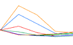

CIDC - Remote Sensing Science
CIDC - Remote Sensing Science
Contents:
Angular Radiation Distribution Models
for ERBE
This section describes a set of broad spectral band shortwave (0.2 to 4 micron) and longwave (5 to 50
micron) angular radiation distribution models. The satellite measurements of Earth-atmosphere
radiations are usually confined to certain local times and specific directions of view depending on
orbital constraints and instrument scanning capabilities. However, if angular dependence of reflected
and emitted radiation for a surface are known, the total outgoing flux at the top of the atmosphere
and the radiations in all directions could be inferred from a single observation (
Raschke et al., 1973).
Development of angular radiance distribution models has been one of the objectives of the Earth
Radiation Budget experiment (ERB) on the Nimbus-7 satellite (Jacobwitz et al.,
1984). A comprehensive
set of angular radiance distribution models presented here (Suttles et
al. 1988a, 1988b) have been
derived primarily from radiances measured between 1978 and 1980 by the Nimbus-7 ERB scanner. In data
sparse regions the parameters have been estimated including observations from Geostationary Operational
Environmental Satellite (GOES) because of its better diurnal sampling capability
(Minnis and Harrison,
1984b). The data gaps were filled by a variety of other techniques including interpolation and extrapolation
based on the reciprocity principle, some empirical and radiative transfer models (Suttles et
al. 1988a, 1988b).
The parameters of the shortwave angular radiance distribution model consist of both bi-directional
and directional parameters. The bi-directional parameters are anisotropic factor, standard deviation
of shortwave (SW) radiances, and shortwave-longwave radiance correlation coefficient as a function
of 10 solar zenith angle, 7 viewing zenith angle, 8 relative azimuth angle and 12 scene categories.
The directional parameters are mean albedo as a function of solar zenith angle and mean albedo normalised
to overhead Sun.
The longwave angular radiance model parameters are anisotropic factor and standard deviation of longwave
(LW) radiances as a function of 7 viewing zenith angle, 10 colatitude, 4 season and 12 scene categories.
The directional parameters are mean daytime longwave flux and (day - night) longwave flux difference
derived as a function of 10 colatitudes and 4 seasons. The longwave daytime flux difference is given
only for 10 scene types.
The angular bi-directional and directional radiation distribution model have been used in the analysis
of satellite measurements, earth radiation budget studies and in particular by the Earth Radiation Budget
Experiment (ERBE) team in the ERBE inversion algorithm (Barkstrom et al.,
1989)
as a tool for inferring
hemispheric fluxes from ERBE radiances (Smith et al., 1986; Wielicki and Green, 1989).
angular radiation
distribution models.
The data is available on Volume
1 of the CIDC CD set.